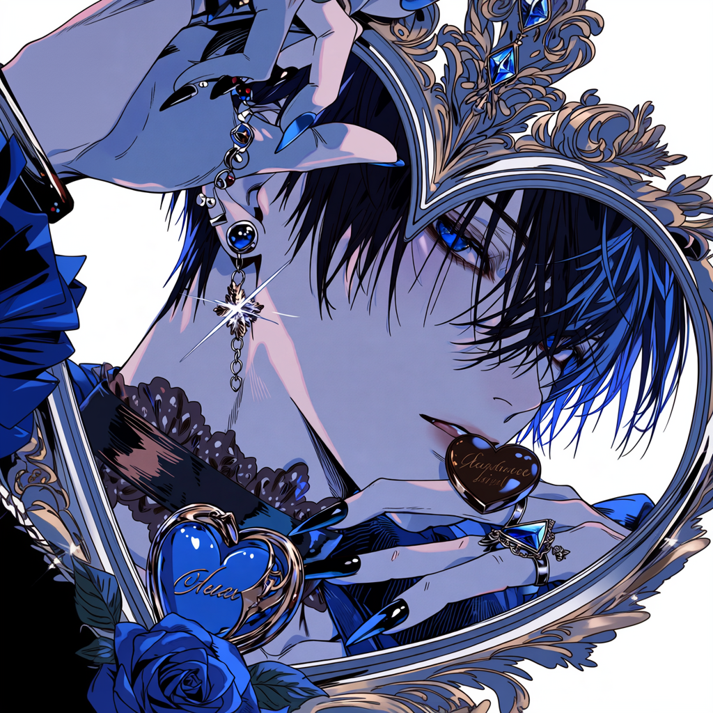

Portfolio
濱田 香津美
生成AI活用／業務支援・コンテンツ制作
Latest & News
- Award Qiita「生成AIの珍プレー大賞」受賞
- Release 校務DXアプリ「Gakuen AI」配布中
- Release いじめ撲滅「アンケートSOS分析ツール」配布中
（業務委託・フルリモート対応）

自己紹介
官公庁・公的機関での事務業務、Webライターとしての文章制作を経て、現在は生成AIを活用した業務支援・コンテンツ制作を行っています。
エンジニアではありませんが、非エンジニア層・教育現場・現場担当者にも使えるAI活用を得意とし、
企画・構成・制作・進行管理まで一貫して対応可能です。
対応可能な業務領域
⚙️
生成AIを活用した
業務効率化・業務支援
📚
教育・研修・セミナー用
コンテンツ制作
🎨
AIイラスト／漫画／
動画制作
✍️
Web記事・note代筆
（AI／DX／活用事例）
🧭
企画立案・構成設計・
制作進行管理
▶ 役割：実務担当／制作担当／現場とAIの橋渡し
Works & Achievements
生成AIを「現場の力」に変える、多角的なアウトプット。
生成AI × 教育・業務支援
専門用語を極力排し、現場で「すぐ使える」形に最適化。セミナーから実務導入まで幅広く対応します。
- セミナー・講座： 初心者向けAI活用講座のコンテンツ設計・資料作成
- 教育支援： 生成AIセミナー用テキスト・教材スライド制作
- 担当範囲： 企画構成、原稿作成、スライド設計、教育的表現の調整
AIイラスト・漫画・動画制作
ビジュアル表現だけでなく、制作フロー全体を管理。一人で完結できる制作対応力が強みです。
- ビジュアル： AIイラスト制作（キャラ素材／企画ビジュアル）
- 動画・漫画： ショートアニメ動画制作、AI漫画制作
- 担当範囲： 原作、脚本、キャラ設計、イラスト生成、動画編集、声優手配
ライティング・情報発信
実体験ベースでの執筆。ハルシネーションや失敗事例も含めた「実務視点」の情報を発信しています。
- 実績： Qiita 生成AI開発ブログ部門「珍プレー大賞」受賞
- メディア： note運営・代筆、AIツール活用記事の執筆
- 特徴： 非エンジニア層・現場担当者にも響く、平易で深い解説。
AI ART Exhibition
デジタルサイネージ化アプリ
BrushMosaicPro
超軽量モザイクツール
Easy V-Studio
重ね撮り動画ツール
おみくじアプリ
シンプル運勢診断
多言語翻訳コンバーター
API連携翻訳支援
アンケートSOS分析
Googleフォーム連携分析
Gakuen AI
校務DX支援ツール
強み Demonstrated Strengths
⏱️
事務経験による
正確性・期限管理
📝
文章構成力・
情報整理力
💡
生成AIを
「業務に使う」視点
🏭
一人で完結できる
制作対応力
💬
チャットベースでの
リモート業務適応力
使用ツール・環境
💬
AIモデル
ChatGPT / Gemini / NotebookLM
🎨
クリエイティブソフト
Canva / CLIP STUDIO PAINT / 動画編集ツール
🛠️
専門ツール
各種生成AIツール
▶ 用途に応じて最適なツールを選定・併用
働き方・スタンス
🤝
業務委託：歓迎
🏠
フルリモート勤務
対応可能
💼
正社員
条件次第で検討可
🗣️
チーム連携・
オンラインコミュニケーション可
🔒
守秘義務・
納期遵守を重視
まとめ
生成AIを導入するだけで終わらせず、
「実際に使われる形」に落とし込む実務担当として貢献できます。
「実際に使われる形」に落とし込む実務担当として貢献できます。
業務効率化、教育支援、コンテンツ制作など、
AI活用を現場に浸透させる役割をお探しの場合、ぜひお声がけください。
AI活用を現場に浸透させる役割をお探しの場合、ぜひお声がけください。